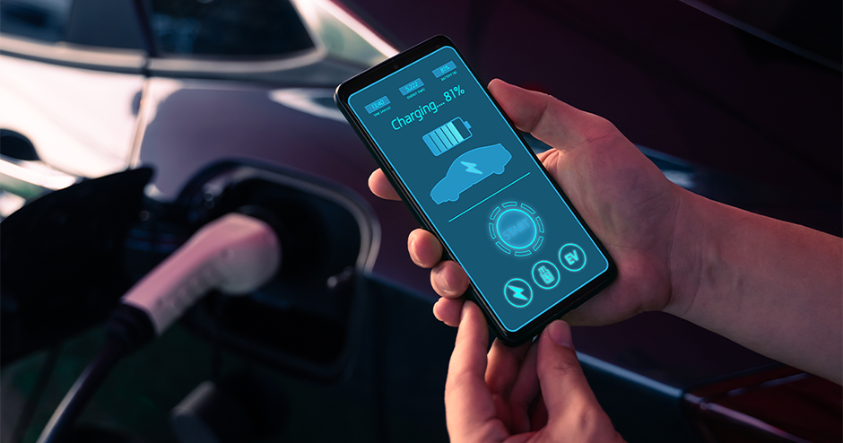

Benefits of Sustainable EV Battery Recycling in New Zealand
Sustainable EV battery recycling delivers environmental, economic, and social benefits, transforming challenges into opportunities and the following benefits:
Recycling EV batteries helps prevent hazardous waste and pollution. End-of-life (EoL) batteries contain metals such as lithium, cobalt, and nickel that, if improperly disposed of, can leak into soil and waterways. By safely recovering and reusing these materials, New Zealand can significantly reduce its ecological footprint and avoid contamination risks.
Recycling also reduces the demand for raw mineral extraction, conserving water, land, and energy resources while lowering global carbon emissions associated with mining and refining.
Recycling also reduces the demand for raw mineral extraction, conserving water, land, and energy resources while lowering global carbon emissions associated with mining and refining.
Building a sustainable EV battery recycling industry opens the door to new green jobs, regional investment, and local innovation. Establishing domestic recycling and repurposing facilities will strengthen New Zealand’s economic independence and reduce reliance on overseas processing.
Recovered materials can feed back into the supply chain, supporting local manufacturing, technology development, and clean-energy initiatives. This circular economy approach transforms waste into valuable resources, stimulating growth in multiple sectors such as renewable energy, transport, and materials science.
Recovered materials can feed back into the supply chain, supporting local manufacturing, technology development, and clean-energy initiatives. This circular economy approach transforms waste into valuable resources, stimulating growth in multiple sectors such as renewable energy, transport, and materials science.
Used EV batteries that still retain 70–80 % of their capacity can be repurposed for stationary energy storage. These second-life applications help stabilise the national grid, store solar energy, and provide backup power for homes, businesses, and community facilities.
By reusing existing batteries, New Zealand can improve its energy security, support renewable generation, and reduce pressure on the power network — all while extending the useful life of valuable battery components.
By reusing existing batteries, New Zealand can improve its energy security, support renewable generation, and reduce pressure on the power network — all while extending the useful life of valuable battery components.
A structured framework ensures safe handling, transport, and processing of hazardous materials. Following international standards (UN 3480/3481) and working alongside Fire and Emergency New Zealand (FENZ) reduces the risks of fire, explosion, or chemical leaks during storage and recycling.
Clear safety guidelines, workforce training, and national regulations will not only protect workers and communities but also increase public confidence in the recycling system.
Clear safety guidelines, workforce training, and national regulations will not only protect workers and communities but also increase public confidence in the recycling system.
EV battery recycling supports New Zealand's commitments under the Waste Minimisation Act 2008 and the Emissions Reduction Plan, helping the nation transition toward a low-carbon, circular economy.
It also encourages public participation and environmental awareness — empowering communities, councils, and industry partners to take collective responsibility for sustainable energy use.
It also encourages public participation and environmental awareness — empowering communities, councils, and industry partners to take collective responsibility for sustainable energy use.
By developing a robust national framework, New Zealand can become a regional leader in sustainable battery management, setting an example for other countries in the Pacific and beyond.
Collaboration between government, research institutions, and industry can drive technological innovation in automation, AI-based sorting, and eco-efficient recycling.
Collaboration between government, research institutions, and industry can drive technological innovation in automation, AI-based sorting, and eco-efficient recycling.